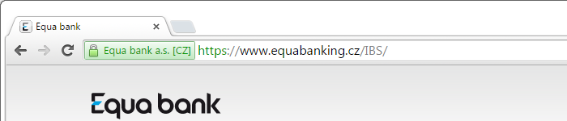
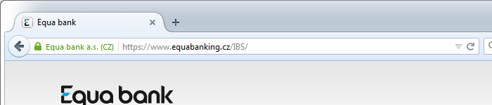
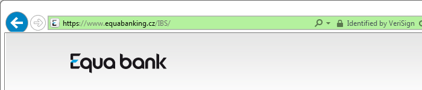

… je jinde. Protože nám velmi záleží na bezpečí finančních prostředků našich klientů a zabezpečení internetového bankovnictví, připravili jsme pro vás několik dobrých rad, jak se vyvarovat případným nepříjemným situacím.
Jedna taková dobrá rada směřuje také nám, finančním institucím. Pokud jste banka, dávejte si pozor na to, jaké domény vlastníte. Nebo spíš nevlastníte. Tuto doménu my totiž nevlastníme. Z nepříjemné situace v roce 2012 jsme se nepoučili.
Zkontrolujte adresu, ta musí být https://www.equabanking.cz, bez pomlčky.
Přesvědčte se, že adresa začíná na https:// (há té té pé es), nesmí začínat jen na http:// (há té té pé). To es na konci je důležité.
Ve vašem prohlížeči musí být zobrazen zelený pruh se jménem banky.
Google Chrome:

Mozilla Firefox:
Microsoft Internet Explorer:
Tuto doménu vlastní Michal ŠpačekDoména již byla převedena bance. Tato stránka slouží k rozšiřování osvěty, zvyšování povědomí o zabezpečení bankovnictví a trénování pozornosti uživatelů.